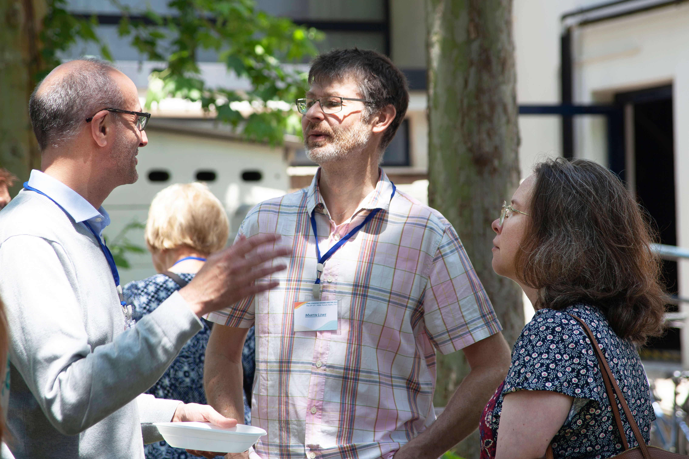
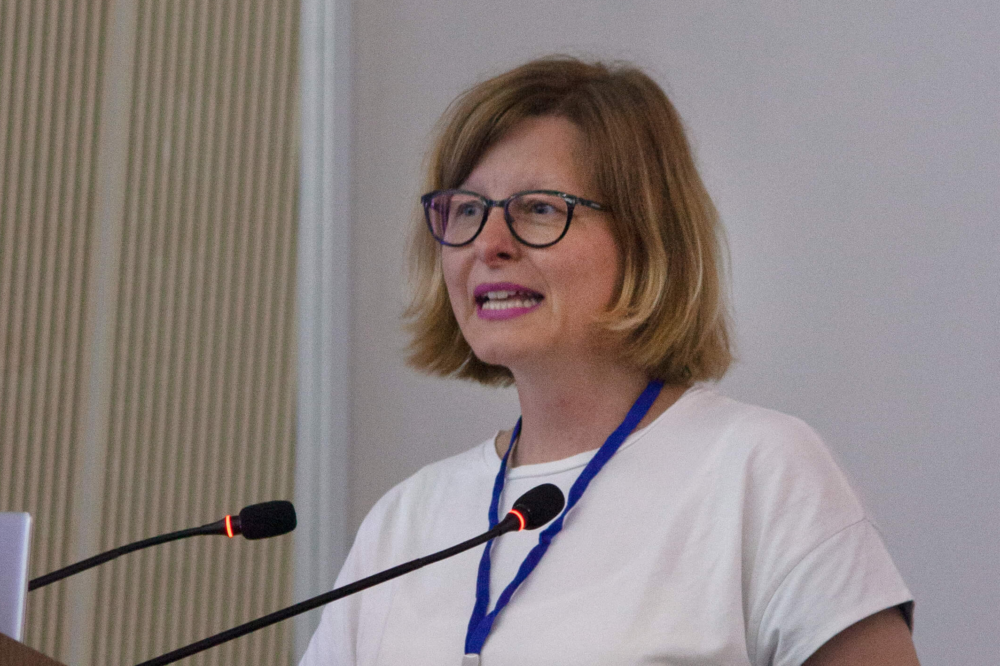
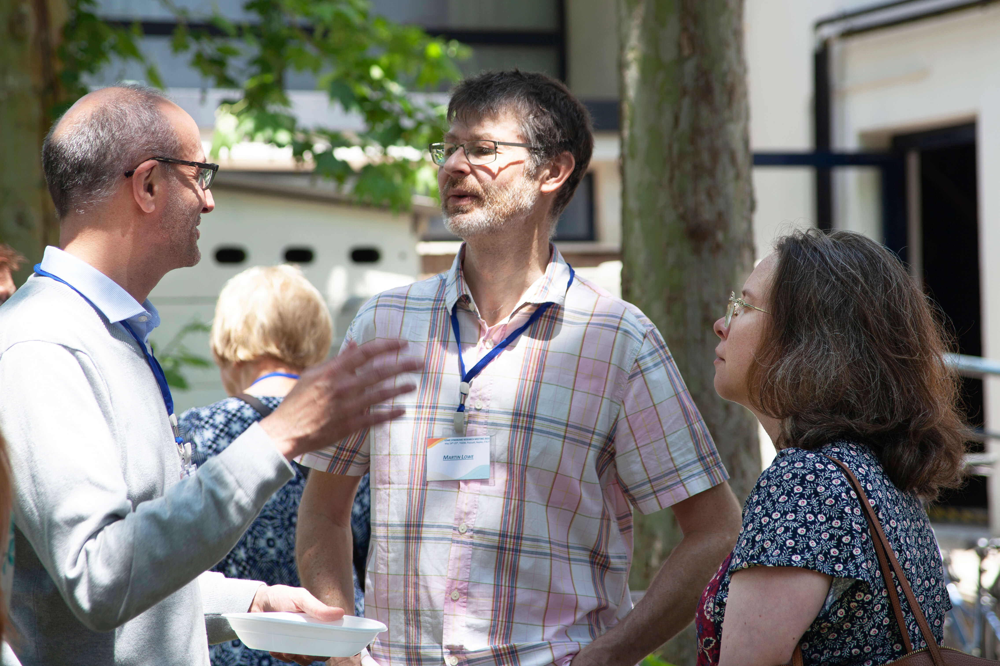
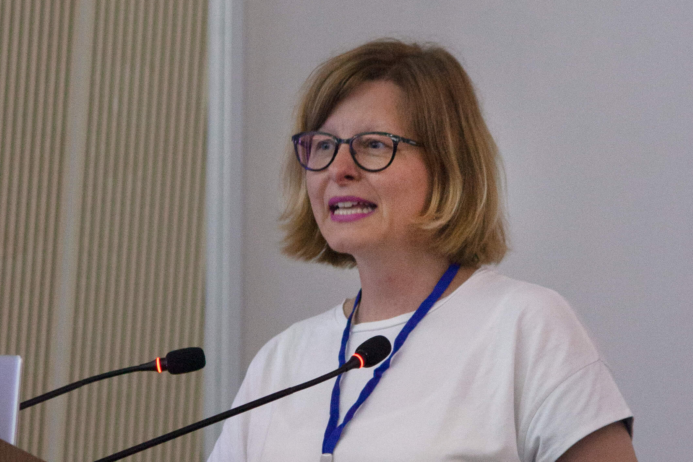
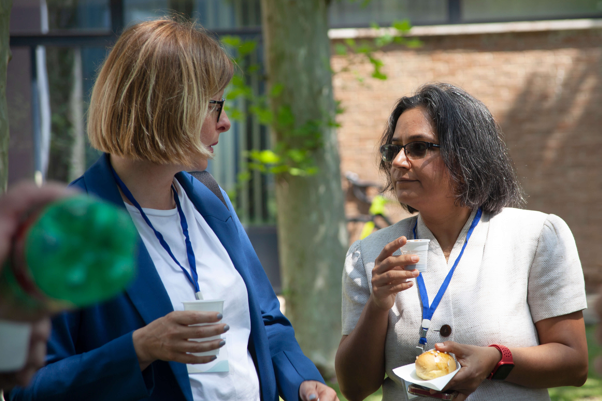
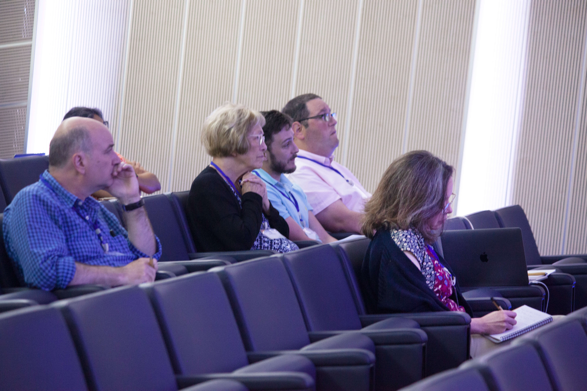
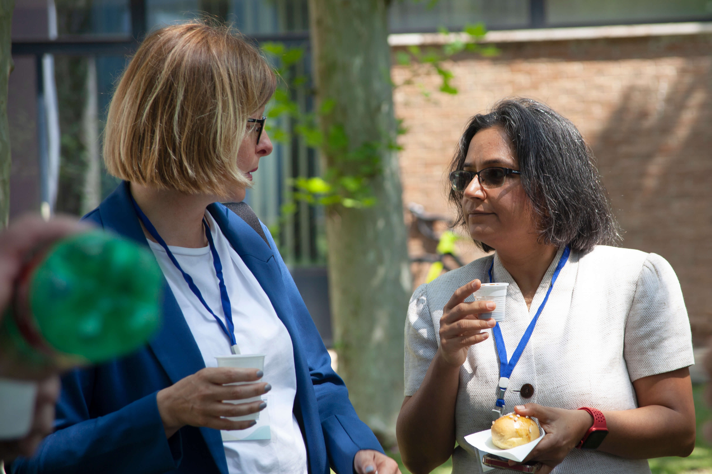
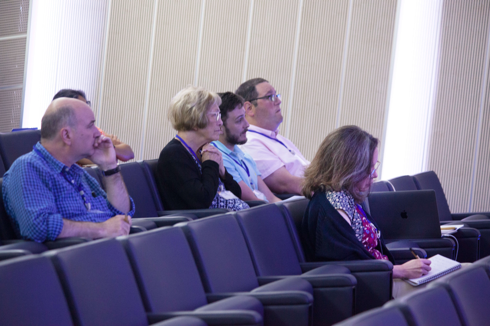
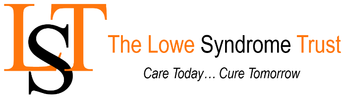

Lowe Syndrome Research Meeting
Incontro di Ricerca sulla Sindrome di Lowe
24 - 25 May | Maggio 2023
The Telethon Institute of Genetics and Medicine, Pozzuoli, Italy
Istituto Telethon di Genetica e Medicina, Pozzuoli, Italia
Program and Lay slides | Programmare dell'incontro e diapositive
Speakers gave 20 minute talks aimed at a non-specialist research audience, followed by a 10 minute Q&A session.
Documento PDF del programma qui
English lay slides PDF document found here
Documento PDF di diapositive laiche italiane qui
A Patient Voice | La voce di un paziente
We were privileged to hear Paul James's experiences and perspectives that he has made freely available.
Abbiamo avuto il privilegio di ascoltare le esperienze e le prospettive condivise da Paul James.
Testimonials | Testimonianze
"Fantastic organization, logistics, relevant agenda and the way the presentations were structured"
"I thought it was excellent" "I really cannot think of how this could have been improved" "In person meeting was excellent"Research talks scored 9.4 out of 10
Patient advocacy talks scored 9.5 out of 10
Collaboration opportunities scored 9.5 out of 10
Photo Gallery | Galleria Fotografica


 




 




Meeting sponsors | Sponsor dell'incontro

Organizers | Organizzatori:
Leopoldo Staiano, TIGEM and IRGB-CNR, Italia
Jenny Gallop, University of Cambridge, UK
Jeri Kubicki, Lowe Syndrome Association, USA
Photos and videos by Theresa Haugen, Lowe Syndrome Association, USA and Natalie Walls, University of Cambridge, UK